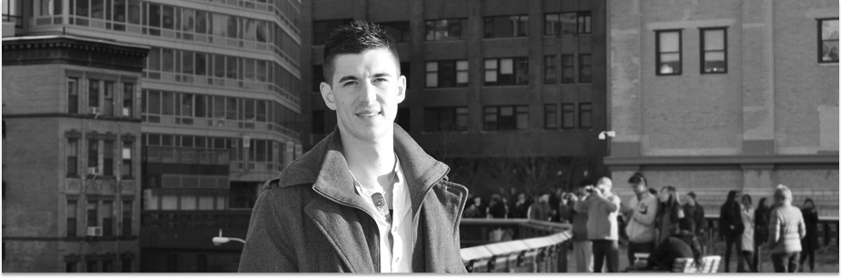

<div class="slideWrapper aboutSlide">
	<div class="aboutWrapper">
		<div class="aboutPhotoWrapper">
			
		</div>
		<div class="aboutNarrowWrapper">
			<div id="aboutMeWrap">
				<div class="aboutPHeading">ABOUT ME</div>
				<div class="aboutPSubHeading">(The Important Stuff)</div>
				<div class="aboutPar">
					<p>I'm western New York born, central Connecticut raised.</p>
					<p>I'm always, always, chewing mint gum.</p>
					<p>I'm a former Pinewood Derby champion.</p>
					<p>Unfortunately for my health, I'm a die-hard Buffalo Bills fan.</p>
					<p>I can juggle.</p>
					<p>Working out is my daily passion and my release.</p>
				
					<p>I eat four eggs, two bananas, and a massive scoop of<br/><span style="position: relative;top: -8px;">peanut butter (chunky only) every morning for breakfast.</span></p>
					<p>I wish I was a much better guitar player than I currently am.</p>
					<div style="position: relative;top: -8px;"><p>I grew seven inches taller in one calendar year, blessing me with low-back issues.</p>
		
					<p>I'd be content eating only peaches for the rest of my life.</p>
					<p>I have an innate ability to find myself in "I'm going to be late" situations.</p>
					<p>My eyebrows sweat when I eat spicy food.</p>
					<p>A career in the NFL would be the only one I would trade for this one.</p></div>
				</div>
			</div>
			<div id="aboutExperience">
				<div class="aboutPHeading">EXPERIENCE</div>
				<div class="aboutPSubHeading">(The Short)</div>
				<div class="aboutPar">
					<p>During college I landed an internship with the brilliant <br/><span style="position: relative;top: -8px;">creatives at World Wrestling Entertainment.</span></p>
<div style="position: relative;top: -8px;">
<p>Under their wing my design, concepts, and role <br/><span style="position: relative;top: -8px;">	 expanded rapidly along with my portfolio.</p>

<p>After graduation I went to the Connecticut agency <br/><span style="position: relative;top: -8px;"> that offered me the most responsibility.</p>

<p>As lead Art Director, I learned the ropes and agency life very quickly.</p>
<p>Short-staffed and surrounded by difficult clients,<br/> <span style="position: relative;top: -8px;">we managed to expand the business exponentially.</span></p>
<div style="position: relative;top: -8px;">

<p>Listened to my itch to move to New York City and finally pulled the trigger.</p>

<p>Currently stationed at JWT-New York,<br/><span style="position: relative;top: -8px;"> avoiding sleep and doing everything physically possible to excel.</p></div></div>


				</div>
			</div>
		</div>
		<div id="resumeWrapper">
			<div id="aboutExperience">
				<div class="aboutPHeading">EXPERIENCE</div>
				<div class="aboutPSubHeading">(The Long)</div>
				<div id="dlResumeWrap">
					<a href="/bin/dlResume.php"></a>
				</div>
			</div>
			
		</div>
	</div>
</div>